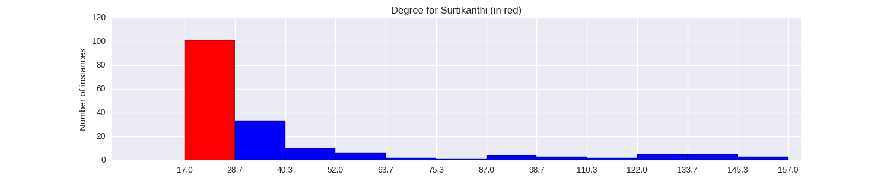

Quantiative Wayang Dictionary
Surtikanthi
Terms of address: Dewi
Type: Human
Origin: India
Notes on the Sanskrit version: Known as Vrushali, she is the wife of Karna and the daughter of Shalya.
Description in the Javanese version: She is a sibling of Erawati who marries Karna, but who was earlier in love with Arjuna. Her father Salya was initially opposed to her union to Karna, since he wanted her to marry Duryudana. She committed ritual suicide upon hearing that Karna was killed in the Baratayuda war, but this was due to a false report before Karna's actual death.
Found in the follwing lakon (stories):
Family relationships
Mother: Pujawati
Father: Salya
Siblings: Erawati, Banowati, Burisrawa, Rukmarata
Consorts: Karna
Offspring: Kardana, Warsasena, Warsakusuma, Karnawati
More information
Sources: Ensiklopedi Wayang Purwa, pp. 528-529; Mengenal Gambar Tokoh Wayang Purwa, p. 243; Sejarah Wayang Purwa, pp. 255-256; Ensiklopedi Wayang Indonesia, pp. 368-369 (Vol. VIII); Rupa dan Karakter Wayang Purwa, pp. 1086-1087
Network measurements for Surtikanthi
| Measurement | Value | |
|---|---|---|
| Degree | 24.0 |  |
| Weighted Degree | 29.0 |  |
| Betweeness Centrality | 0.0 |  |
| Eigenvector Centrality | 0.197342584089 |  |
{kind=link}
Characters in the same adegan as Surtikanthi
| Character | Link weight |
|---|---|
| Character | Link weight |